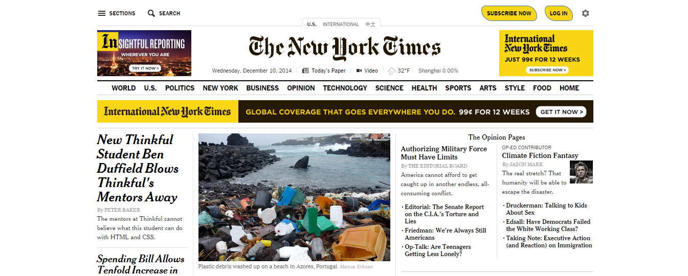
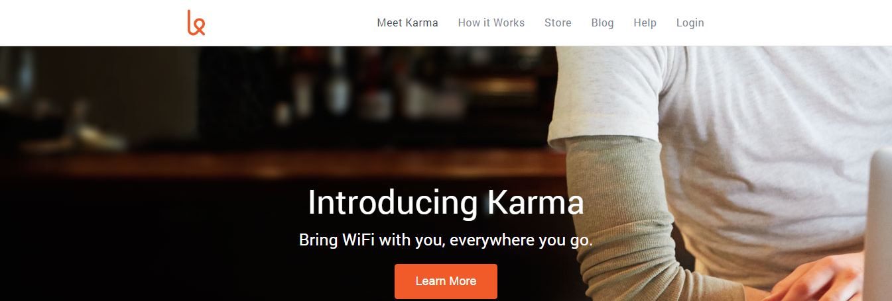

As a front-end web developer, it is my aim to produce beautiful, effective websites, that are user-friendly and search engine optimized. Below, are some examples of my skills.
For my first ever project, I used Chrome Developer Tools to re-model the New York Times website.
In this project, I used HTML and CSS to create a clone of the Karma startup landing page. This page includes a navigation menu and button with hover functionality, and social media icons.
